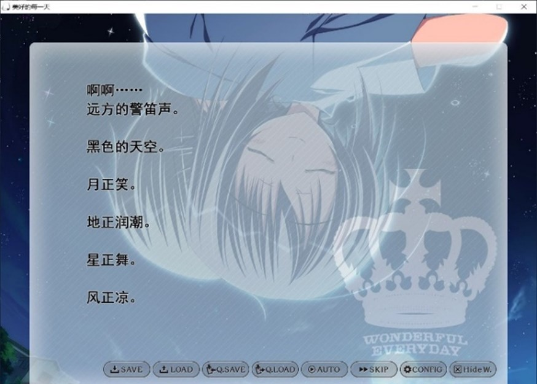
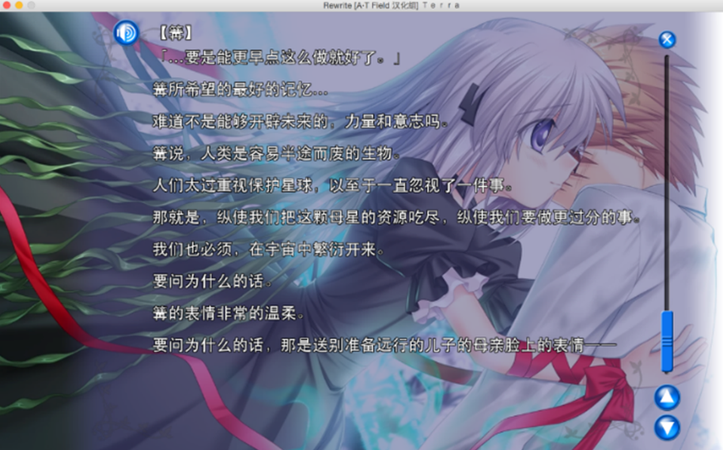
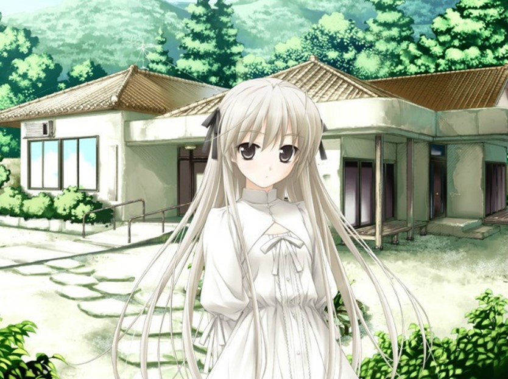
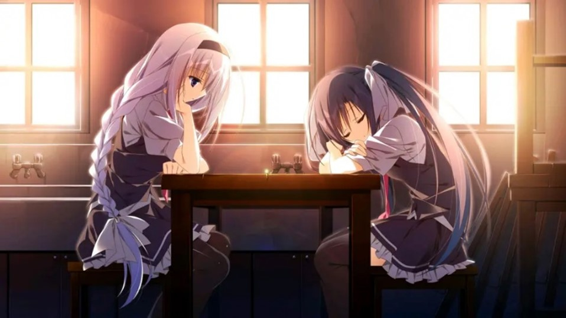

月やあらぬ 春や昔の 春ならぬ わが身ひとつは もとの身にして
Galgame在狭义上是指一系列玩家可以与动画美少女互动的电子游戏，“ギャルゲーム”一词是日语中的合成词，由“ギャル(gal)”与“ゲーム(game)”组合而成，在国内的亚文化圈中，也代指视觉小说，即将故事情节和cg场景结合在一起叙事，玩家可以在与游戏角色的互动中身临其境。与其他游戏不同的是，galgame不需要多高的电脑配置，也不要求玩家高超的游戏技术，而是描写“平平淡淡的生活琐事与脉脉温情中淡淡的哀愁”。作为视觉小说，galgame在叙事上与传统小说有相似也有不同，传统小说遵循三要素原则，即“人物、情节、环境”，一般引入入胜的小说，他们或有跌宕起伏的情节，或有至人深思的寓意。传统的小说是“一维化”的，即只有时间线和文字，而视觉小说则能做到“二维化”，用图像和文字让读者有更沉浸的体验，当然这在某种程度上却牺牲了人的想象力，玩家虽不能像阅读传统小说那样有着自己的的世界观理解，但同时导演却能更准确的向玩家授意自己的想法，仿佛观看一部电影般，娓娓道来。

音乐、场景、剧本。这三个因素从来都是衡量一个galgame好坏的核心标准，其中场景的好坏更是影响玩家对游戏的第一印象。最近几年废萌的省心，各大会社纷纷将精力放在了拔点上，而忽略了对游戏氛围的营造，以至于近几年游戏剧情都千篇一律，而且极其没有营养，以至于出现了玩家“玩一部忘一部”的尴尬情况。在吐槽业界堕落的同时，不禁想起那些让我推完后抑郁数日、难以忘却的作品，重新审视后，才发现有许多细节其实并未被发现。
朱光潜先生在《谈美》中曾有过对“上位艺术”和“下位艺术”的讨论，一部好的艺术作品，不然不会唐突的产生高潮，故事的叙述必然大量篇幅的铺垫。雨果的《巴黎圣母院》前一半主要是对当时的社会环境、宗教文化的叙述，仿佛与主干情节无关，但它却奠定了作品的氛围，大量关于圣母院的描写，也为后来卡西莫多营救埃斯梅拉达做了铺垫，正所谓“台上一分钟，台下十年功”，故事的的高潮不是一蹴而就的。传统小说如此，galgame亦如此，以key社的《rewrite》为例，前面日常的冗长核后续剧情的爆炸式展开形成强烈对比，正体现了戏剧：把美好的东西撕碎给别人看的特点，而这份美好蕴藏在环境描写中，需要慢慢去塑造，这也是体现作者笔力的地方。

Galgame的环境描写，更多的时候是无声的、潜移默化的，玩家在不知不觉中就被带入了导演希望的氛围。与传统小说不同的是，galgame有着cg与bgm的加持，于是只需寥寥数语便可将玩家代入意境，作者往往擅长利用自然环境的描写来框定故事发生地点。我前不久推完了minori社的《eden*》，其中的自然环境真的令我难忘，monori社在游戏开发中向美工投入了大量资金，这无疑是值得的，正是游戏中层峦泄翠，空旷悠远的风光与世界末日形成了鲜明对比，类似瓦尔登湖般的世外桃源使人更加沉浸在故事的世界观中。我们假使游戏没有了大量的环境描写，那叙事就会变得干瘪、缺乏张力。

也许有朋友会问，当我游玩纸魔、wa2等剧情作时，我并没有感受到环境描写对游玩感受的影响啊，我只感觉到心里面很不舒服，也就是俗话说的“刀”，仿佛在这类游戏中环境成了一个不关紧要的因素。其实不然，为什么会觉得“刀”呢，其实正是因为剧情变化中人物关系和处境的变化，与玩家所期望的不符。意大利人卡罗·葛齐说，世界上只有三十六种剧情，其中有：人与神之争、错误的嫉妒、错误的判断、悔恨、骨肉重逢、丧失所爱的人等等。Sphere社的《ヨスガノソラ》中舒缓轻柔的背景音乐；细腻的画风与柔美的作画；发生于夏季的、拥有大片青山的僻静、优美的乡村（故事舞台）。对我来说，都是影响我游玩感受的不可忽视的因素。而剧情只是与这些因素平行并列的其中一个因素。它们共同塑造了一个田园牧歌式的童话爱情故事，构成了一个令人向往的、与人生幸福的理想十分接近的美好世界。试想没有这些自然因素的加成，整个游戏可能就是一部平凡的、甚至有点恶心的骨科剧情，游戏中巧妙运用了乡野的环境设定，乡土气息浓重。较城市来说，天空更加澄净，流水更加清澈，花草更加繁茂。只要抓住乡村美感的一面，任何带有争议的事物都很容易被同化到这种悠远纯净的场景里，正是因为这高超的自然环境描写，使故事便褪去凡尘俗气，变得高洁凄婉。
写在最后，galgame作为一类特殊的游戏，一直是处于灰色地带，大部分人一听说这个名词，脑中便不由自主地跟“黄油”、“adultgame”等联系起来。我从来都不认为galgame是简简单单的黄油，虽然近几年萌拔流行，作品的确除了拔点之外便毫无思想创意和内涵，但真正意义上的galgame应当是一件精美的艺术品，一部能像人们传达作者想法的作品，一个融合了脚本家、原画师、声优等人汗水的结晶。在这个浮躁的、追求效率的社会，更多的人会选择用二十分钟半小时去打一把绝地求生，谁会用一个漫长的下午慢慢咀嚼一部冗长的galgame呢？教员在《纪念白求恩》一文中曾言：我们要做一个脱离了低级趣味的人。何为低级趣味？当戴着一部有色眼镜去游玩时，你看到的只有拔点，而作者精心安排的环境描写、剧情铺垫却统统ctrl跳过，这边是业界堕落的真正原因，不是会社不想做出有内涵、引人深思的作品，而是玩家群体的浮躁，毕竟能做废萌赚钱谁愿意投入大笔资金到脚本和原画呢？心有大海，那便春暖花开。

「万里无云的西边天空，唯存夕阳的赤红余晖。
宛如一颗碧玉静静地沉于万红之中。
外面的繁杂噪声消失无踪。
赤色燃烧的世界，渐渐染上寂静的碧色。
楼梯的上面某处，完全染上了一片赤红。」
——樱之诗
「在春日里,想要为怀着些许不安迈出脚步的你,在背后轻推一把
在盛夏,想成为一习凉风,轻抚你擦拭汗水的脸颊
在清秋,想要握着你举棋不定的手
在寒冬,想要对着低下头的你打声招呼」
——初雪樱